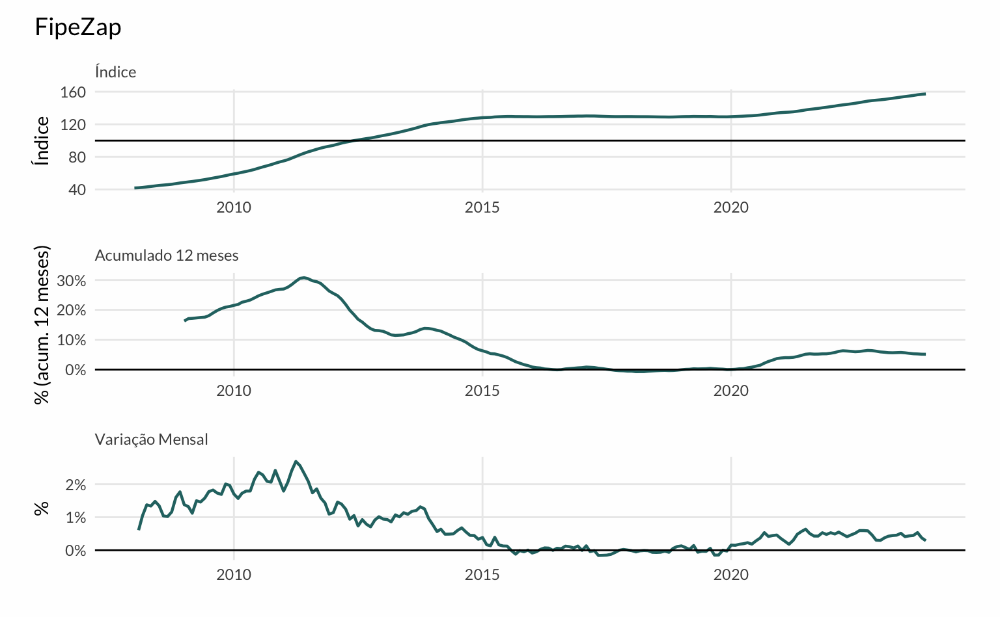
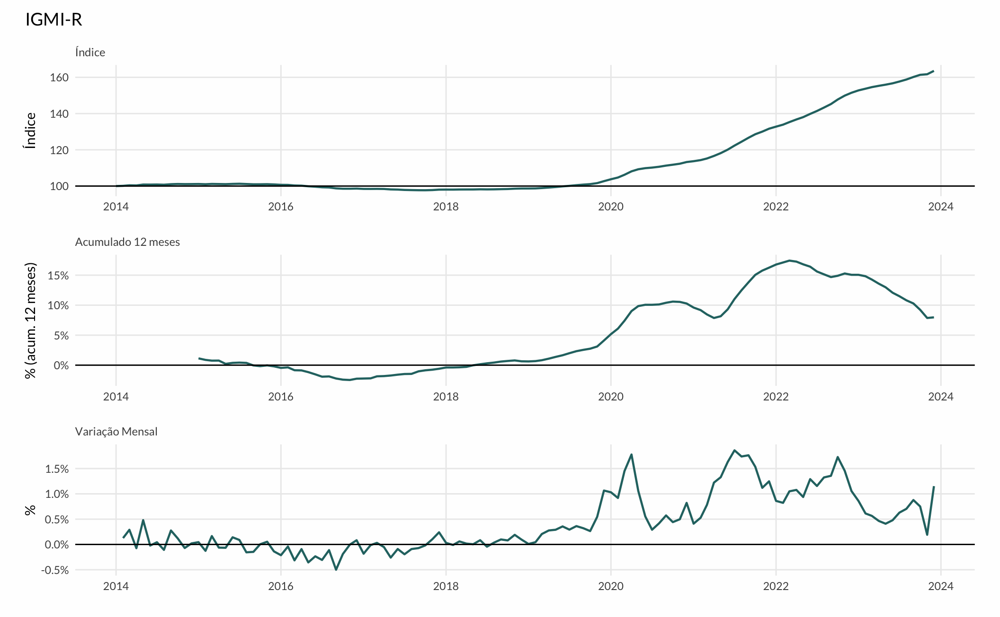
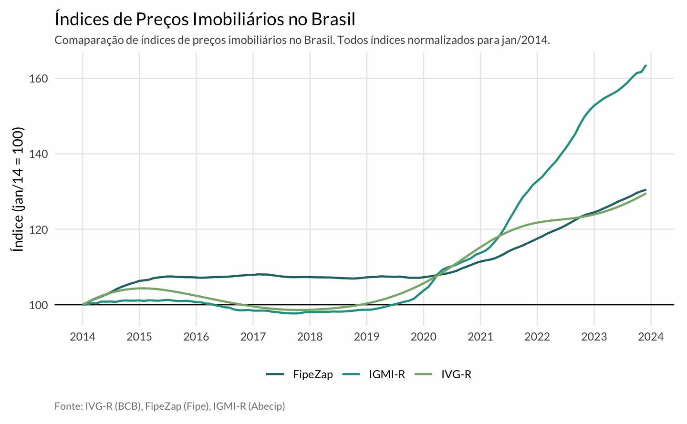
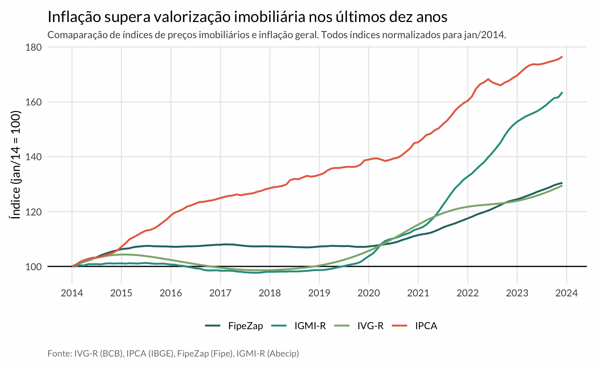
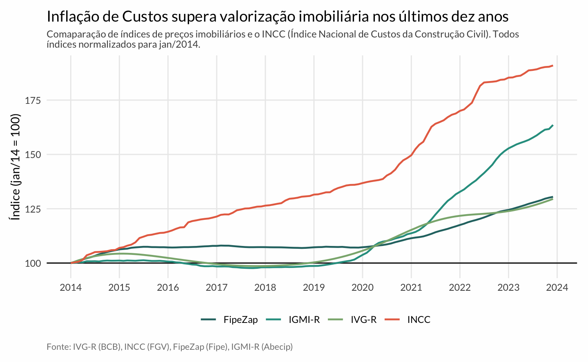

Índices de Preços Imobiliários
A teoria
Um índice de preço convencional mensura a evolução do preço de um bem ou de uma cesta de bens ao longo do tempo. No caso mais simples, acompanha-se a dinâmica de um único bem, cujo preço no período \(t\) é dado por \(p_{t}\). Assim, temos um índice \(I_t\) dado por:
\[ I_{t} = \frac{p_{t}}{p_{t-1}}\times 100 \]
Tipicamente, nosso interesse é de acompanhar uma cesta de bens. No caso do IPCA, indicador oficial da inflação, por exemplo, acomapanha-se um conjunto de bens que representa o “consumidor típico”. Assim temos \(i\) bens diferentes cada um com um preço \(p_{i, t}\). Neste post, vamos ignorar o problema (bastante complexo) de como agregar estes diferentes bens num índice único. Para todos efeitos vamos imaginar que existam pesos \(w_i\) imutáveis que representam o quão importante cada bem é para o “consumidor típico”. Assim temos: \[ I_{t} = \frac{\sum_{i \in I}w_{i}p_{i,t}}{\sum_{i \in I}w_i p_{i, t-1}} \]
O índice assim é chamado de Índice de Laspeyres e é um dos índices mais comuns. O supracitado IPCA é um índice de Laspeyres, por exemplo. Apesar de simples, ele serve como base para se pensar índices de preços imobiliários1. Um índice de preços imobiliário mensura a tendência dos preços no mercado de imóveis. Em geral, costuma-se distinguir os mercados residencial e comercial devido às idissincracias de cada mercado. Neste post vamos tratar somente do mercado residencial.
Há alguns desafios gerais relacionados à criação de um índice de preços imobiliário residencial (RPPI2). Os pontos gerais são listados abaixo
- Imóveis são bens heterogêneos
- Imóveis não são transacionados com frequência
- Imóveis operam em submercados específicos
Abaixo entro em mais detalhes sobre estes pontos. Uma revisão geral sobre a literatura de índices de preços imobiliários no contexto brasileiro está disponível no texto do IPEA, Índice de Preços para Imóveis. A referência geral e completa é o manual da Eurostat (2013), Handbook on Residential Property Price Indices.
Imóveis são heterogêneos
Em economia, há bens homogêneos (ou commodities) e bens heterogêneos. Pode-se pensar em bens homogêneos como bens em que é fácil encontrar um substituto; já bens heterogêneos são aqueles em que é muito difícil encontrar um substituto. Imóveis são um caso limite de bens heterogêneos. Quando se considera a localização como parte de seus atributos, cada imóvel é literalmente único, não existe nenhum outro equivalente no mundo. Mesmo quando se constroi apartamentos com plantas idênticas num mesmo prédio, pode-se ainda encontrar diferenças entre as unidades (seja o andar, a posição solar, etc.).
O preço de bens heterogêneos reflete diferenças de qualidade. No caso de imóveis, pode-se pensar nos seus atributos estruturais (metragem, número de dormitórios, etc.) e locacionais (rua, bairro, proximidade a pontos de interesse, etc.). Faz sentido que a maior ou menor disponibilidade destes atributos influencie o preço do imóvel.
Para entender como isto dificulta a estimação de um índice considere o caso de um imóvel abandonado que passa por uma significativa reforma. Naturalmente, o preço de venda deste imóvel aumenta várias vezes. Um índice de preços que identifica isto como um movimento dos preços em geral será enviesado.
Uma maneira de contornar isto é usando a modelagem hedônica. A modelagem ou precificação hedônica decompõe o preço de um imóvel em função de duas características observáveis. Assim, atribui-se um “preço” para cada uma das características do imóvel. Isto permite que se atribua corretamente qual parte do movimento dos preços é, de fato, um movimento de mercado.
Imóveis não transacionam com frequência
Descobrir o preço do arroz é uma tarefa tão simples como de olhar o valor etiquetado sobre a sua embalagem no mercado. No caso de imóveis isto é muito mais complicado. Todo imóvel tem um preço, mas apenas uma minúscula fração do estoque total de imóveis está “no mercado”, disponível para ser transacionado. Isto dificulta a aferição de preços.
Além disso, torna-se difícil comparar “laranjas com laranjas”. Considere o caso de um índice mensal. Dificilmente, os mesmos imóveis serão vendidos todos mês; pelo contrário, o caso mais comum seria observar, a cada novo mês, uma lista completamente nova de imóveis vendidos. Isto significa que o Índice vai estar comparando a evolução de preços de imóveis diferentes a cada mês.
Uma maneira de contornar isto é usando modelagem hedônica para precificar os imóveis que não estão à venda. Assim, seria possível prever o preço que um imóvel teria, caso ele tivesse sido vendido num determinado mês, o que permite fazer comparações adequadas. A qualidade desta precificação, por sua vez, depende da qualidade de dados disponíveis.
Imóveis operam em submercados
Isto é outra maneira de dizer que nem todos os imóveis competem entre si. O mercado de imóveis se comporta similarmente a um mercado de mathcing onde as demandas dos clientes limitam a oferta relevante. Uma família de quatro pessoas dificilmente vai estar interessada em comprar um studio ou apartamento de 1 dormitório, qualquer que seja o seu preço. Na prática, isto significa que há vários mercados imobiliários; é possível que o mercado de casas de 4 dormitórios esteja em alta enquanto o mercado de apartamentos de 1d esteja em baixa. Similarmente, o mercado imobiliário da capital pode seguir um processo distinto do mercado imobiliário do interior.
Novamente, uma estratégia para resolver isto é usar a modelagem hedônica. Outra estratégia é estratificar o índice para criar subíndices. Esta é uma prática bastante comum. Tipicamente, cria-se subíndices segundo algum critério estrutural (número de dormitórios ou tipologia) ou regional (capital x região metropolitana, interior).
Resumo
Existe uma literatura considerável sobre a criação de índices de preços. Desde a Grande Crise Financeira de 2008, há um interesse renovado no monitoramento do preço dos imóveis3.
O atual consenso da literatura é de que um RPPI deve controlar pela qualidade dos imóveis observados (quality-adjusted index). Idealmente, a melhor metodologia é construir um índice hedônico com alguma estratégia de estratificação e imputação dupla. O único motivo para não usar um índice hedônico é quando não há informação suficiente para estimá-lo.
A estratégia de imputação dupla permite maior flexibilidade na escolha da forma funcional do modelo hedônico. Escolhas comuns incluem: (1) regressão linear; (2) modelos de econometria espacial (SAR, SEM, etc.); e (3) modelos aditivos generalizados. Mais recentemente, alguns pesquisadores têm experimentado com modelos de aprendizado de máquina como de redes neurais. Em 2023, a Zillow revisou a metodologia do Zillow Home Value Index (ZHVI); o índice agora utiliza um modelo de redes neurais.
Enquanto um Índice de Fisher (ou Tornqvist) apresenta propriedades ideais, nem sempre existe informação disponível para calculá-los. Assim, é natural utilizar um índice de Laspeyres junto com informação censitária para ajustar os pesos. Infelizmente, o Brasil não dispõe de um Censo de Imóveis, assim é necessário adaptar os pesos a partir do Censo Demográfico.
Índices no Brasil
No Brasil há três principais índices de preços imobiliários:
- Índice de Valores de Garantia de Imóveis Residenciais Financiados (IVG-R)
- Índice FipeZap (FZ)
- Índice Geral do Mercado Imobiliário Residencial (IGMI-R)
Os dois primeiros são índices de mediana estratificados, enquanto o último é um índice hedônico. Vou comentar sobre estes índices em maior detalhe.
IVG-R
O IVG-R foi desenvolvido pelo Banco Central do Brasil a partir de laudos que são feitos durante o processo de financiamento de imóveis para pessoas físicas. Neste sentido, a base do IVG-R é muito rica pois abarca a totalidade dos imóveis financiados pelos sistema financeiro nacional. Evidentemente, isto implica que os imóveis comprados à vista não estão incluidos neste índice. Territorialmente, o índice considera as mesmas regiões metropolitanas do IPCA, o que garante boa representatividade nacional.
Em termos metodológicos o IVGR é um índice de mediana estratificado. Essencialmente, verifica-se o preço mediano do imóvel financiado mês a mês e encadeia-se este valor de maneira a gerar um índice. A interpretação do índice é bastante simples e usa-se a mediana, ao invés da média, pois o preço de imóveis costuma ser fortemente assimétrico à direita. Na prática, alguns cuidados adicionais são feitos para reduzir a volatilidade do indicador. As estimativas mensais são geradas em janelas móveis de três meses (right-aligned), considerando o preço do mês atual e dos dois meses anteriores. A série final é suavizada pelo filtro HP e as séries regionais são agregadas considerando pesos do Censo do IBGE (2010).
Como resultado, o IVG-R é um índice bastante suave. O IVG-R é o mais próximo que existe de um índice “oficial” de preços de imóveis no Brasil. Ele é o índice utilizado pelo BIS na compilação de índices de preços imobiliários.
FipeZap
O Índice FipeZap é um índice de mediana estratificado construído a partir de anúncios online de imóveis. Atualmente, há bastante apoio teórico e empírico para a construção de indicadores baseados em anúncios:
- O preço do anúncio é fortemente correlacionado com o preço de venda;
- A difusão da internet e a digitalização do mercado imobiliário garante que bases de anúncios tenham uma abrangência boa e uma temporalidade quase instantânea;
- O custo de construção de um índice de anúncios é baixíssimo quando comparado com outros métodos de coleta de dados.

IGMI-R
O Índice Geral do Mercado Imobiliário Residencial é o primeiro índice de preços imobiliário hedônico do Brasil. A base de dados do índice é similar a do IVG-R mas o seu tratamento é mais sofisticado. Mais de 40 variáveis são utilizadas no modelo hedônico que ajuda a decompor o preço dos imóveis.
O IGMI-R foi desenvolvido pelo economista Paulo Pichetti, numa parceria entre a FGV e a Abecip. Alguns detalhes sobre a metodologia do índice podem ser vistos nesta apresentação institucional. Atualmente, o IGMI-R é o índice mais preciso sobre o mercado de vendas no Brasil.
A principal fragilidade do IGMI-R é o seu histórico curto. Além disso, o timing de criação do índice foi bastante infortuito, pois a série inicia em 2014. Nos seus breves 10 anos de história, o IGMI-R passou pela maior recessão econômica da história recente do país, uma pandemia global, dois ciclos de alta de juros e a menor taxa de juros da história.
Comparando os índices
Quadro Geral
A tabela abaixo mostra a variação anual acumulada dos três. Para facilitar a contextualização, coloca-se também a variação do IPCA e do INCC.
| Ano | IGMI-R | IVG-R | FipeZap | IPCA | INCC |
|---|---|---|---|---|---|
| 2003 | — | 14.17 | — | 9.30 | 14.42 |
| 2004 | — | 11.24 | — | 7.60 | 11.04 |
| 2005 | — | 8.64 | — | 5.69 | 6.83 |
| 2006 | — | 13.66 | — | 3.14 | 5.04 |
| 2007 | — | 19.43 | — | 4.46 | 6.16 |
| 2008 | — | 23.73 | 14.67 | 5.90 | 11.86 |
| 2009 | — | 26.00 | 21.13 | 4.31 | 3.25 |
| 2010 | — | 23.40 | 26.86 | 5.91 | 7.77 |
| 2011 | — | 16.28 | 26.32 | 6.50 | 7.48 |
| 2012 | — | 10.08 | 13.03 | 5.84 | 7.12 |
| 2013 | — | 8.71 | 13.74 | 5.91 | 8.09 |
| 2014 | 1.09 | 5.02 | 6.70 | 6.41 | 6.94 |
| 2015 | −0.20 | −1.57 | 1.32 | 10.67 | 7.49 |
| 2016 | −2.26 | −2.83 | 0.57 | 6.29 | 6.10 |
| 2017 | −0.60 | −1.11 | −0.53 | 2.95 | 4.25 |
| 2018 | 0.64 | 1.47 | −0.21 | 3.75 | 3.83 |
| 2019 | 4.11 | 5.00 | 0.00 | 4.31 | 4.14 |
| 2020 | 10.28 | 9.08 | 3.67 | 4.52 | 8.81 |
| 2021 | 16.25 | 6.34 | 5.29 | 10.06 | 13.84 |
| 2022 | 15.06 | 1.17 | 6.16 | 5.78 | 9.27 |
| 2023 | 7.97 | 1.43 | 5.13 | 4.62 | 3.49 |
Gráficos
Para fazer uma comparação visual entre as séries é preciso definir um período comum para servir de base. No gráfico abaixo, ajusto as três séries em torno de seus valores médios em 2019. Vê-se como o comportamento das séries é muito similar nas séries históricas. Há uma divergência - cada vez maior - a partir de 2021 no período da pandemia. O IGMI-R registra um aumento significativo dos preços enquanto o IVG-R fica estagnado. Já o FipeZap registra uma alta muito mais tímida do que o IGMI-R.

O gráfico abaixo encadeia todas as séries a partir de 2014. Este gráfico facilita a comparação dos índices no período mais recente.

O próximo gráfico contrasta os índices de preços imobiliárias com a taxa de inflação geral da economia.

Por fim, compara-se a evolução dos índices com relação aos custos de construção. Novamente, os preços finais dos imóveis não acompanham o aumento nos custos da construção civil, ao menos dentro desta janela de análise.
Correlação e Cointegração
Em termos mais técnicos, pode-se ver que as séries naturalmente são correlacionadas, visto que elas estão tentando mensurar a mesma variável. Assim, não deve ser surpreendente que as séries tenham autocorrelação cruzada e que sejam cointegradas. O gráfico abaixo mostra a função de autocorrelação entre as séries após se tomar uma diferença simples e uma diferença sazonal.
Mais a título de curiosidade reporta-se as estimativas dos coeficientes dos termos de ajustamento do modelo de correção de erros, normalizadas segundo a série do IGMI.
| ect1 | ect2 | |
|---|---|---|
| IGMI.R.l3 | 1.0000 | 0.0000 |
| IVG.R.l3 | 0.0000 | 1.0000 |
| FipeZap.l3 | −3.4145 | −0.8616 |
| trend.l3 | 0.1856 | 0.1271 |
Longo Prazo
A maior janela de análise possível é comparar o IVG-R com os demais índices de preço da economia. Este gráfico é interessante, pois mostra como o preço dos imóveis no Brasil cresceu acima tanto da inflação como dos custos quando se olha o horizonte mais longo, desde 2001. Estes resultados constrastam com o verificado nos últimos 14 anos, desde 2010, como apontei em outro post. Uma discussão interessante sobre estes três indicadores está disponível em Lima (2022) num texto de discussão do Núcleo de Real Estate da Poli-USP.
A dinâmica de preços de imóveis no Brasil, em partes reflete a própria economia brasileira. O ciclo de crescimento de preços é interrompido em 2014 e só volta a crescer em 2018, ganhando força em 2020 com a baixa taxa de juros.
Referências
Hill, R. J., & Melser, D. (2008). Hedonic imputation and the price index problem: an application to housing. Economic Inquiry, 46(4), 593-609.
Hill, R. J. (2013). Hedonic price indexes for residential housing: A survey, evaluation and taxonomy. Journal of economic surveys, 27(5), 879-914.
Eurostat (2013). Handbook on residential property prices indices (RPPIs).
Nadalin, V. G., & Furtado, B. A. (2011). Índice de preços para imóveis: uma revisão.
Fipe (2011) Methodology
Fipe (2020) Notas Metodológicas (Atualização)
Footnotes
Uma discussão mais aprofundada da teoria de números-índice está disponível em Hill & Melser (2008), especificamente no contexto de imóveis. Os autores concluem que os índices de Fisher e de Törnqvist apresentam as melhores propriedades. A escolha entre um ou outro depende da forma funcional da equação de regressão utilizada no modelo hedônico. Num modelo semilog (onde a variável dependente, i.e., preço do imóvel, está em log) o melhor índice é o de Törnqvist.↩︎
Do inglês Residential Property Price Index.↩︎
Uma lista de justificativas e usos de índices de preços imobiliários pode ser vista em …↩︎